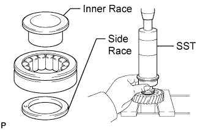
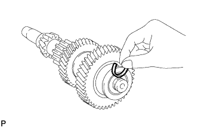
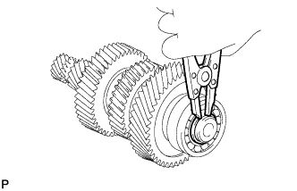

COUNTER GEAR AND REVERSE IDLER GEAR > REASSEMBLY |
| 1. INSTALL FRONT COUNTER GEAR BEARING OR ROLLER |
Apply gear oil to a new side race and bearing.
 |
Install a new inner race and the side race to the bearing as shown.
Using SST and a press, install the bearing (with inner race and side race).
| 2. INSTALL FRONT NO. 1 COUNTER GEAR BEARING SNAP RING |
 |
Select a new snap ring that will allow minimum clearance.
| Part No. | Thickness | Mark |
| 90520-27053 | 2.45 to 2.50 mm (0.0965 to 0.0984 in.) | A |
| 90520-27054 | 2.50 to 2.55 mm (0.0984 to 0.100 in.) | B |
| 90520-27055 | 2.55 to 2.60 mm (0.100 to 0.102 in.) | C |
| 90520-27056 | 2.60 to 2.65 mm (0.102 to 0.104 in.) | D |
| 90520-27057 | 2.65 to 2.70 mm (0.104 to 0.106 in.) | E |
| 90520-27058 | 2.70 to 2.75 mm (0.106 to 0.108 in.) | F |
 |
Using a snap ring expander, install the snap ring to the counter gear.